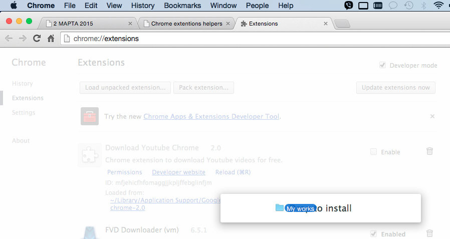
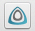
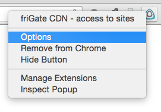
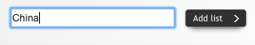
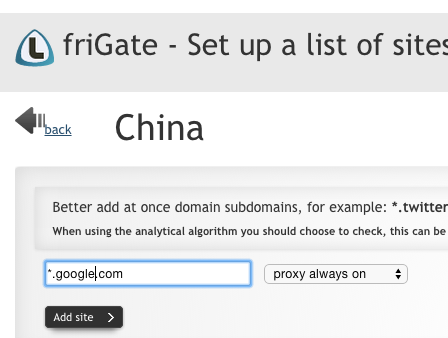

Be advise to look at http://www.howtogeek.com/120743/how-to-install-extensions-from-outside-the-chrome-web-store/
where described how to let Chrome 3rd party extensions be installed.
--enable-easy-off-store-extension-install
Tick «Developer mode» > press button «Load unpacked extention...»
Инструкция по настройке интернета в Китае
- Скачать и распаковать это расширение frigate_cdn_1.4.383_0.zip
- Перетянуть распакованную папку frigate_cdn_1.4.383_0 на открытую страницу с расширениями chrome://extensions/

- После установки увидеть иконку расширения frigate справа сверху окна Chrome 
- Нажать правой кнопкой и выбрать Options

- В настройках расширения найти строку куда можно вписать название нового листа, назвать его China и нажать Add list:

- Добавить в список по одному сайты из списка enabled.com.md

- Смело пользоваться, добавляя в список новые сайты. Игнорировать предупреждение при запуске браузера о ненадёжном источнике расширения. В следующий раз установить расширение из Chrome App Store, найдя его по названию frigate.
Приятного использования!